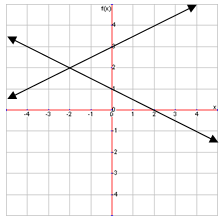
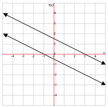
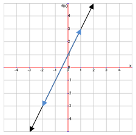

\((-2,2)\) is the solution for this system. When a system has at least one solution, it is called a consistent system.
Special Cases
Most systems you encounter will be consistent ones, but sometimes there are special cases. Look at the following graph:
This is an inconsistent system because the two lines never intersect, so there is no point that satisfies both equations. That means no solution for this system. This type of system can only exist with parallel lines.
A third type of system you might see looks like this:

These two lines are on top of one another, so they are called dependent systems, because any point on one line will also be on the other line. Because there are an infinite number of solutions, there is a special way to write them. The x coordinate is just written as x, and the y coordinate is written as mx+b (from the slope intercept form of an equation). So, the solution for the above graph would look like this:
\((x,2x+1)\)
We can write the solution like this because the equations for each line is the same, so \(y=mx+b\) for each line is the same, so we can replace the y coordinate with \(mx+b\).